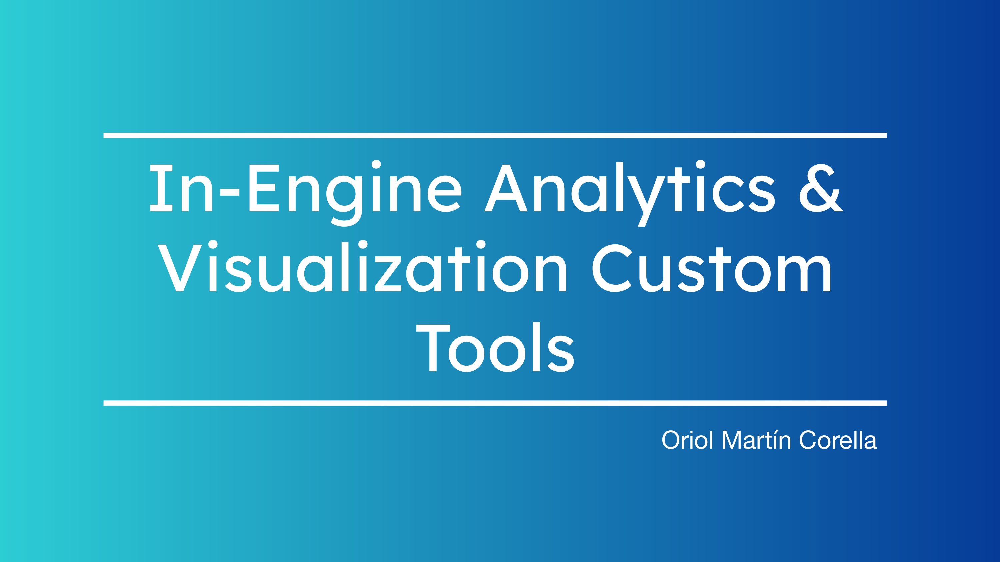

Project Overview
This project focuses on the development of custom data analysis and visualization tools within Unity for my Minesweeper game.
The goal was to record gameplay behavior, transform it into analyzable data, and make the results visible directly in-engine and through Python analysis.